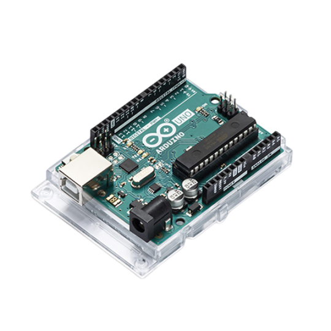

Projets d'automatisme et de vision industrielle en entreprise

Durant ma période d'alternance en milieu industriel, j'ai participé activement à divers projets complexes, mettant en œuvre mes compétences en automatisme, robotique, vision industrielle et supervision. Voici un résumé des missions les plus significatives :
Programmation et mise en service de caméras industrielles KEYENCE
J'ai configuré et testé la caméra KEYENCE VS-L160MX à l'aide du logiciel VS Creator, en exploitant les fonctionnalités de classification par intelligence artificielle. J'ai également rédigé un guide d'utilisation détaillé destiné à mes collègues. D'autres systèmes de vision KEYENCE ont été programmés, intégrant la gestion d'outils de positionnement, de classifications, et des tests de communication avec automates (via STEP7). J'ai aussi travaillé avec le lecteur Datamatrix KEYENCE SR-X300W et le module de communication DL-PN1 pour le Capteur de distance guidé par image "IX-150", assurant leur programmation, leur test, et leur intégration.
Développement de systèmes d'automatismes sur lignes de production
- Réalisation et mise à jour d'analyses fonctionnelles en lien avec des lignes d'assemblage et d'usinage.
- Création d'interfaces homme-machine, ajout et gestion de boutons, alarmes et défauts techniques sur plusieurs IHM.
- Migration complète de programmes d'automates vers un nouvel environnement logiciel, avec adaptation des standards d'affichage et test des dispositifs de sécurité.
- Programmation et intégration de lecteurs Datamatrix, vérification des communications avec automates et gestion des déclencheurs associés.
Tests, configuration et intégration de capteurs industriels
Tests de capteurs analogiques tels que les SICK DT50 et OD1000-6001R15, paramétrage via SOPAS Engineering Tool, branchements suivant les schémas électriques, diagnostic de compatibilité des modules d’acquisition, calibrations et mise en service. Ajustement précis des mesures grâce à l'ajout de blocs comme ROUND dans les programmes pour un affichage au millimètre près.
Utilisation de logiciels industriels
- TIA Portal : outil principal pour la programmation automate et IHM.
- STEP7 : utilisé pour la gestion des projets existants et des capteurs analogiques.
- RobotGuide : pour la simulation et la programmation robotique.
- Festo Automation Suite : pour le montage et la configuration d’un axe numérique en divers modes (Jog, Position absolue...).
Activités terrain et documentation technique
- Câblage de coffrets électriques, installation de capteurs, interventions sur arrêts d’urgence, pose d’étiquettes sur armoires en hauteur.
- Réunions techniques, présentations clients et support lors des démonstrations de fonctionnement de systèmes automatisés.
- Réalisation de fiches de programmation détaillées pour la transmission des connaissances en interne.
Cette immersion en milieu industriel m’a permis de renforcer mes compétences techniques, de gagner en autonomie et de mieux comprendre les exigences concrètes des systèmes automatisés modernes. Elle représente une étape essentielle dans mon parcours d’ingénieur automaticien.
Dispositif d'Aide au Travailleur Isolé // D.A.T.I.

Dans le cadre de notre projet de troisième année de licence, nous sommes une équipe de quatre étudiants engagés dans la conception et le développement d'un Dispositif d'Aide au Travailleur Isolé (DATI). Ce projet est une initiative académique initiée par nos professeurs, avec pour objectif principal d'explorer et de mettre en pratique nos compétences dans le domaine de l'ingénierie électronique et informatique.
Notre DATI comprend trois composants principaux : un bracelet porté par le travailleur isolé, un boîtier attaché à sa ceinture et un module confier au surveillant. Mon rôle principal dans ce projet est de développer et de perfectionner le bracelet, qui jouera un rôle crucial dans la surveillance et la transmission des données vitales du travailleur.
Le bracelet que nous concevons sera équipé d'un capteur essentiels qui sera un capteur cardiaque pour surveiller en temps réel le pouls du travailleur. Pour assurer une communication fluide et instantanée avec le boîtier de la ceinture, le bracelet sera également doté d'un Module ESP32 ayant le Bluetooth et le Wifi integrer. Ces deux composants permettront au bracelet de transmettre en temps réel les données de fréquence cardiaque au boîtier de la ceinture, assurant ainsi une surveillance constante de la santé du travailleur.
En plus du capteur cardiaque, le D.A.T.I. comprendra également d'autres fonctionnalités importantes pour la sécurité du travailleur isolé. Par exemple, nous envisageons d'incorporer au boitier de la ceinture un gyroscope à six axes pour détecter les chutes ou les malaises du travailleur. Cette fonctionnalité sera cruciale pour déclencher des alertes en cas d'immobilité prolongée ou de mouvements inhabituels, signalant ainsi un potentiel besoin d'assistance.
Outre les capteurs de surveillance, le boitier sera également doté d'une interface utilisateur intuitive, peut-être sous la forme d'un petit écran LCD, fournissant des informations telles que la fréquence cardiaque en temps réel, l'heure, le niveau de batterie restant, et d'autres données pertinentes. Cette interface permettra au travailleur de rester informé de son état de santé et de l'état du dispositif à tout moment.
Dans les zones à risque telles que les ateliers, nous mettrons en place un système de triangulation utilisant trois antennes équipées d'Arduino Nano. Cela permettra de localiser avec précision la position du travailleur isolé dans ces zones. Pour les autres pièces, nous prévoyons d'installer des récepteurs de fréquence simples qui signaleront simplement la présence du travailleur dans la pièce ou indiqueront plus précisément s'il s'agit d'une zone à risque.
Pour le surveillant, nous avons prévu un module externe qui agira comme un centre de contrôle. Ce module sera basé sur un Raspberry Pi et sera connecté au boîtier du travailleur via un réseau Wi-Fi. Il permettra au surveillant de surveiller les données en temps réel, de recevoir des alertes en cas d'urgence et d'afficher les informations sur un écran dédié. De plus, ce module sera équipé d'un buzzer pour signaler les alertes et de fonctionnalités de stockage pour enregistrer les données sur une période prolongée.
En outre, le Raspberry Pi sera utilisé comme serveur pour un site internet dédié au suivi et à la gestion des données du dispositif en plus de l'écran LCD. Ce site offrira une interface conviviale permettant au surveillant d'accéder aux informations du travailleur isolé à tout moment et en tout lieu, renforçant ainsi la réactivité et l'efficacité du système de surveillance.
Bien que nous en soyons encore au stade initial du projet et que nous ayons récemment passé commande pour le matériel nécessaire, nous sommes enthousiastes à l'idée de poursuivre le développement de cette technologie novatrice. Notre objectif est de créer un dispositif DATI robuste et fiable, capable de répondre aux besoins spécifiques des travailleurs isolés tout en leur offrant une tranquillité d'esprit essentielle à leur sécurité.
Nous sommes pleinement engagés dans l'avancement de ce projet et nous avons hâte de voir comment notre travail collectif contribuera à améliorer la sécurité et le bien-être des travailleurs isolés dans divers environnements professionnels.
Projet de la gestion d'une pièce

J'ai conçu le projet "Gestion d'une pièce" dans le cadre d'une évaluation universitaire en troisième année de licence (L3-S5). Mon objectif principal était de développer mes compétences en Arduino et en automatisation en concevant une solution pratique pour gérer l'accès à une pièce de manière automatisée.
L'Arduino UNO m'a été imposée pour ce projet afin d'approfondir mes connaissances et mes compétences dans ce domaine. Bien que je n'aie pas eu le choix de la technologie, l'Arduino UNO est un microcontrôleur que je maîtrise bien et avec lequel je suis à l'aise.
Pour répondre au défi, j'ai sélectionné avec soin les composants nécessaires. Parmi ceux-ci, on compte deux capteurs à ultrasons, une LED pour l'éclairage de la pièce, une LED d'urgence pour les situations critiques, un écran LCD pour afficher le nombre de personnes présentes, un bouton d'urgence et un servomoteur pour contrôler la porte.
Les capteurs à ultrasons ont été disposés de manière stratégique pour éviter les erreurs de comptage. En plaçant un capteur devant et un autre derrière la porte, le système assure une détection précise de l'entrée ou de la sortie des personnes dans la pièce, éliminant ainsi les erreurs potentielles. De plus, si une personne passe devant le premier capteur mais fait marche arrière, la porte se referme automatiquement après un laps de temps défini (sans incrémenter ou décrémenter le compteur de personne dans la pièce).
L'entrée ou la sortie d'une personne met à jour un compteur affiché sur l'écran LCD. De plus, une LED intégrée au système sert de source lumineuse dans la pièce. Dès qu'au moins une personne entre, la LED s'allume automatiquement pour assurer un éclairage adéquat, s'éteignant dès que la pièce est vide.
En cas d'urgence, déclenchée par l'appui sur le bouton dédié, le système réagit en ouvrant la porte et en faisant clignoter une LED rouge pour alerter les utilisateurs. Après un laps de temps défini, la porte se referme, le compteur est réinitialisé à zéro et le système revient à son état normal.
Des améliorations potentielles pourraient inclure le comptage des personnes lors de l'état d'urgence pour garantir que tout le monde est bien sorti, ainsi qu'un affichage plus détaillé indiquant le nombre maximum de personnes autorisées et si ce seuil est atteint ou non. Ce ne sont pas des améliorations difficiles à ajouter, cependant je n'y ai pas pensé avant que mon professeur m'en fasse part.
En conclusion, le projet "Gestion d'une pièce" a été une opportunité précieuse pour approfondir mes compétences en Arduino, en automatisation et en conception de systèmes embarqués. Il m'a permis de mettre en pratique mes connaissances académiques dans un contexte réel, tout en développant ma capacité à résoudre des problèmes pratiques et à concevoir des solutions innovantes.
À travers ce projet, j'ai appris à exploiter les fonctionnalités de base de l'Arduino UNO et à intégrer différents composants matériels pour créer un système automatisé fonctionnel. Les défis rencontrés, tels que la gestion des capteurs, la logique de contrôle de la porte et la gestion des situations d'urgence, m'ont permis de développer ma pensée critique et ma capacité à trouver des solutions efficaces.
En envisageant des améliorations potentielles telles que la surveillance à distance ou la notification par téléphone pourraient être envisagées, je suis convaincu que ce projet pourrait être étendu pour répondre à des besoins plus spécifiques ou être adapté à d'autres applications. En somme, cette expérience a été enrichissante et m'a permis de progresser dans mon parcours d'apprentissage en électronique et en automatisation.
Projet d'Automatisation Thermique et Hygrométrique d’une enceinte

Dans notre projet, nous formions une équipe de sept membres, répartis en trois groupes distincts selon leurs spécialisations. Deux membres se sont consacrés à la gestion de l'humidité, tandis que deux autres se sont focalisés sur la surveillance de la température. Trois membres supplémentaires ont constitué l'équipe chargée de concevoir l'interface utilisateur dans laquelle je faisais partie. Cette répartition équilibrée nous a permis de couvrir efficacement tous les aspects du projet, en exploitant les compétences et les expertises spécifiques de chaque groupe pour atteindre nos objectifs de manière collaborative.
implication dans le projet Projet d'Automatisation Thermique et Hygrométrique d’une enceinte reposait donc principalement sur la mise en place de l'Interface Homme Machine (I.H.M.). Pour ce faire, nous avions utilisé l'architecture maître-esclave utilisant deux cartes Arduino afin de pouvoir contrôler la partie thermique et hygrométrique simultanément. Cette responsabilité m'a amené à prendre en charge plusieurs aspects cruciaux du projet, nécessitant à la fois des compétences en programmation, en électronique et en gestion de projet.
Dans un premier temps, j'ai dû étudier avec un collègue les différentes options de communication disponibles, notamment les protocoles UART, I2C et SPI. Après une analyse approfondie des besoins du projet, nous avons opté pour le protocole SPI en raison de sa compatibilité avec l'écran TFT spécifique choisi pour l'interface utilisateur. Cette décision a nécessité une compréhension approfondie des avantages et des limitations de chaque protocole, ainsi que des implications en termes de câblage et de programmation.
La mise en œuvre de la communication maître-esclave a été une étape complexe mais gratifiante. J'ai dû concevoir un système permettant à la carte Arduino maître de coordonner les actions avec la carte esclave tout en assurant une transmission efficace des données. Cela impliquait de développer un code robuste et modulaire, capable de gérer simultanément plusieurs tâches et de gérer les éventuelles erreurs de communication.
Parallèlement à cela, j'ai été chargé de concevoir et de développer l'interface utilisateur du système. J'ai utilisé une approche axée sur l'utilisateur, en élaborant plusieurs croquis d'interface et en collaborant étroitement avec les autres membres de l'équipe pour choisir la meilleure option. Notre objectif était de créer une interface conviviale et intuitive, permettant un contrôle efficace des différents composants du système. J'ai donc veillé à ce que l'IHM soit ergonomique et facile à utiliser, tout en tenant compte des contraintes matérielles et des spécifications du projet. Pour ce faire, j'ai développé l'interface de manière intégrale, en créant chaque aspect sans recourir à des bibliothèques préexistantes.
Tout au long du projet, j'ai dû faire preuve d'une grande autonomie et d'une capacité à résoudre des problèmes techniques complexes. J'ai travaillé en étroite collaboration avec les autres membres de l'équipe pour assurer la cohérence et la compatibilité de nos différents composants, tout en respectant les délais et les contraintes budgétaires du projet.
En conclusion, mon implication dans ce projet m'a permis d'acquérir une expérience précieuse dans la conception et le développement de systèmes embarqués complexes. J'ai développé mes compétences en programmation, en électronique et en gestion de projet, tout en contribuant de manière significative à la réalisation d'un produit fonctionnel et innovant. Ce projet a été une expérience enrichissante qui m'a permis de relever des défis techniques passionnants et de développer des solutions créatives pour les surmonter.
Vous trouverez ci-dessous le code de l'Arduino Maître et Esclave, ainsi qu'un compte-rendu détaillé de notre partie sur l'IHM. Ces documents illustrent mon travail et mes contributions à ce projet.
Conception d'un Robot Autonome Multifonctionnel

Durant ma deuxième année de licence, j'ai eu l'opportunité d'explorer en profondeur le domaine passionnant de la robotique en concevant et en programmant (en Python) plusieurs robots autonomes à l'aide du LEGO Mindstorms EV3, une plateforme idéale pour l'apprentissage et l'expérimentation dans ce domaine. Ces projets m'ont offert une expérience pratique précieuse et m'ont permis de développer un large éventail de compétences techniques et transversales, tout en explorant en profondeur les possibilités de Python en matière de développement logiciel.
Chacun de ces robots présentait des fonctionnalités et des objectifs différents, ce qui m'a poussé à m'adapter et à innover à chaque étape du processus de conception et de programmation. Par exemple, j'ai conçu un robot capable de créer des formes géométriques sur demande, exigeant une interaction utilisateur intuitive et une précision dans l'exécution des mouvements. Pour y parvenir, j'ai dû non seulement programmer le robot pour interpréter les commandes utilisateur, mais aussi concevoir un mécanisme de manipulation précis des pièces LEGO, ce qui m'a appris à résoudre des problèmes de manière créative en combinant les aspects techniques et pratiques.
Un autre projet stimulant consistait en la création d'un robot capable de suivre de manière autonome une source lumineuse. Pour cela, j'ai exploité les capteurs de lumière du EV3 et développé des algorithmes de contrôle de mouvement pour permettre au robot de se déplacer de manière fluide et précise en réponse aux variations de luminosité. Cette expérience m'a permis d'approfondir ma compréhension des concepts de perception et de traitement de l'information, des compétences cruciales dans le domaine de l'EEA.
Un défi encore plus complexe était la conception d'un robot capable de résoudre un labyrinthe de manière autonome. Pour y parvenir, j'ai élaboré des algorithmes de planification de trajectoire efficaces, combinant des techniques de cartographie et de navigation pour permettre au robot de trouver le chemin le plus court vers la sortie du labyrinthe tout en évitant les obstacles. Cette expérience m'a permis de développer des compétences analytiques et de résolution de problèmes.
Dans un autre projet, j'ai mis en œuvre un système de suivi de ligne combiné à des capacités d'évitement d'obstacles, nécessitant une intégration complexe de plusieurs capteurs et un contrôle de mouvement précis pour assurer une navigation fiable sur des terrains variés.
Parmi mes réalisations les plus précises, j'ai conçu un robot capable de mesurer avec une grande précision les dimensions d'un rectangle ayant des côtés de couleurs différentes. Ce projet a exigé une calibration minutieuse des capteurs et une programmation précise pour interpréter les données sensorielles et calculer les dimensions du rectangle avec exactitude.
En plus d'acquérir des compétences techniques avancées en programmation et en conception mécanique, ces projets m'ont également permis de développer des compétences essentielles telles que la résolution de problèmes et la pensée critique. En travaillant sur ces projets, j'ai appris à relever des défis techniques complexes avec créativité et détermination, ce qui m'a préparé à relever de nouveaux défis dans ma carrière professionnelle à venir.
En conclusion, mon expérience avec le LEGO Mindstorms EV3 a été une étape cruciale dans mon parcours académique, me permettant d'explorer ma passion pour la robotique et de développer des compétences techniques et transversales qui seront précieuses dans ma future carrière.
Création de site internet et des formulaires

Au-delà de mes projets académiques, j'ai également consacré une part importante de mon temps à la création de sites internet et de formulaires. Ces projets, principalement personnels, reflètent mon intérêt passionné pour le développement web et ma volonté constante de perfectionnement dans ce domaine. Ayant choisi de suivre le cours de "Programmation Internet" au semestre 5 de ma licence parmi une sélection de matières optionnelles, j'ai pu approfondir mes connaissances et accentuer mon désir de développer des compétences en programmation web.
De manière autodidacte et par une initiative personnelle, j'ai exploré divers langages de programmation et technologies web pour concevoir des sites internet fonctionnels et esthétiques. J'ai utilisé des langages tels que HTML et CSS pour la structure et la mise en forme des pages web, tandis que j'ai intégré des fonctionnalités dynamiques en utilisant PHP pour le traitement des données côté serveur. De plus, j'ai exploité MySQL en tant que base de données pour stocker et gérer les informations des utilisateurs ainsi que les données des formulaires. Cette utilisation de différentes technologies m'a permis de créer des sites interactifs et dynamiques, offrant une expérience utilisateur enrichissante.
De la conception initiale à la mise en ligne, j'ai pris en charge chaque étape du processus de développement, ce qui m'a permis d'acquérir une expérience significative dans la création de projets web. J'ai également développé des compétences avancées en matière de conception de formulaires interactifs, offrant aux utilisateurs une expérience fluide et intuitive lors de l'interaction avec les sites que j'ai créés.
Ce portfolio même en est une illustration. Créer ce portfolio a été un projet personnel passionnant, où j'ai pu mettre en pratique toutes les compétences acquises au fil de mes expériences. De la conception de l'interface utilisateur à l'intégration de fonctionnalités dynamiques, j'ai investi du temps et de l'énergie pour en faire un reflet fidèle de mon parcours et de mes compétences. Il représente non seulement mes réalisations et mes projets, mais aussi mon engagement envers l'apprentissage continu et mon désir de partager mes connaissances et mes réalisations avec les autres. En somme, la création de sites internet et de formulaires, y compris ce portfolio, constitue un aspect essentiel de mon parcours, démontrant mon engagement envers l'apprentissage autonome et mon désir constant de repousser les limites de mes compétences en développement web.